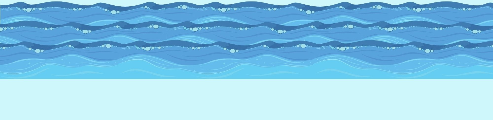

Water and Water Cycle

Water
Water has three states such as solid, liquid, and gas. In this portion, we will discuss how water behaves in these three states:
Water as a Solid
When water reaches 0 °C it turns into a solid state and becomes ice. This is what we call freezing. When water freezes, its molecules move closer together making it less dense than water. Its molecules arrange themselves with empty spaces, which act as a floatation device. This means that ice is lighter than water allowing it to float in other liquids and keep its shape.
Water as a Liquid
At room temperature, water is a liquid whose molecules are loose and can take the shape of anything it is poured into. Unlike water as a solid, it can keep its shape as long as it doesn’t melt. When water is in its liquid form, the particles are quite close together and move with random motion throughout the container. The hydrogen bonds in liquid are constantly formed and broken as the particles slide against each other.
Water as a Gas
It is called water vapor when water is heated at 100 °C until it vaporizes and turns into a gas. This process is called Evaporation. When water turns into water vapor or gas its molecules are very loose and far apart which allow them to move freely.
Speaking of evaporation, this is one of the main steps in the global water cycle, let me elaborate more on that in the next portion:
The Role of Water in the Water Cycle
The water cycle shows how water moves within the Earth and the atmosphere. There are four main stages of the water cycle: liquid water evaporates, condenses to form clouds, precipitates back to earth, and collects in the oceans, rivers, etc.

Evaporation
This is when the warmth from the sun causes the water from the oceans, lakes, rivers, etc. to rise into the air and turn into water vapor or a gas.
Condensation
This is when the water vapor condenses to form clouds and goes back to being liquid water.
Precipitation
This is when the built-up water vapor from the clouds falls back into the earth in the form of rain or snow.
Collection
This is when the rain or snow falls and gets collected into oceans, lakes, rivers, etc. and the cycle repeats over and over again.
Made by: Remotigue, Cameela Antoinette T.
